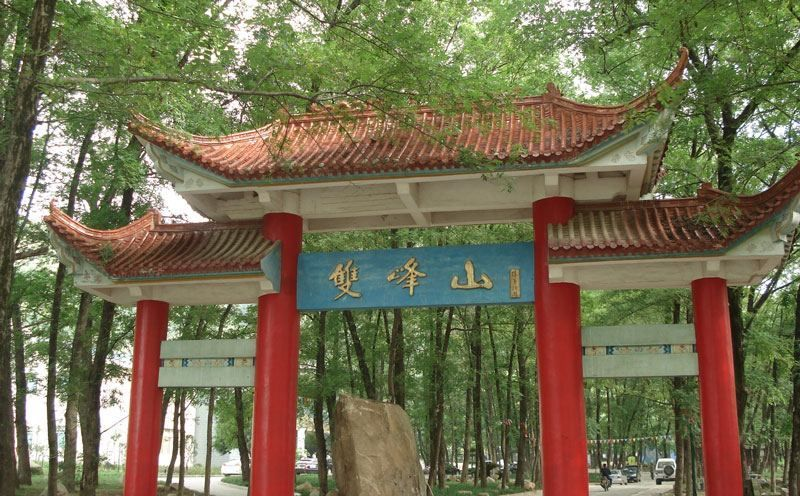
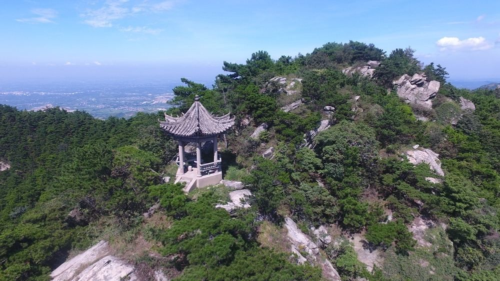
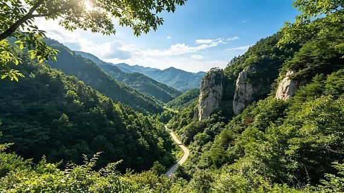

总览
精华A
精华B
美食
交通·贴士
WORLDSTIP
NEO GUIDE · 旅行卡

FILIAL CITY · 双峰山
孝感
SHUANGFENG MOUNTAIN
孝感
旅行指南
中国 · 湖北
孝德之城 · 02
WORLDSTIP
NEO GUIDE · 旅行卡
孝感
· 孝德山水
XIAOGAN · NATURE
双峰山
SHUANGFENG
为什么来
双峰山
：国家森林公园，有“中华孝爱第一山”之称
观音湖
：碧水青山，亲水度假
董永故里
：访七仙女传说与孝文化
武汉高铁仅约半小时，超短线
避坑 & 贴士
双峰山上山多台阶，备体力与饮用水
温泉季（秋冬）汤池人气高，提前订
1
/ 06
WORLDSTIP
NEO GUIDE · 旅行卡
双峰山
· 奇峰秀水
DAY 1 · FOREST

双峰山亭台
MOUNTAIN PAVILION
登山路线
拾级而上，寻
仙女桥、青龙洞
峰顶俯瞰层峦叠翠，身心舒畅
⛰
贴士
林木葱郁，夏秋最宜；备足水与防滑鞋。
2
/ 06
WORLDSTIP
NEO GUIDE · 旅行卡
观音湖
· 亲水度假
DAY 2 · LAKE & SPA

双峰山谷
VALLEY
上午 · 观音湖
环湖步道、游船亲水
或转
董永故里
听七仙女故事
下午 · 汤池温泉
重点泡汤、放松筋骨
温泉+酒店一站式度假
♨
温泉
汤池温泉冬季最热门，建议提前订套餐。
3
/ 06
WORLDSTIP
NEO GUIDE · 旅行卡
孝感味道
· 甜香四溢
EAT · LOCAL
本地味道
孝感麻糖
：酥脆糖香，有名特产
孝感米酒
：清甜润喉，湖北经典
藕粉圆子、粉藕汤、豆油皮
糊汤粉、面窝配豆浆
🍬
伴手礼
麻糖、米酒超市/老字号都有，方便打包带走。
4
/ 06
WORLDSTIP
NEO GUIDE · 旅行卡
交通贴士
· 出行
GO · STAY
怎么去
高铁至
孝感北/孝感站
武汉自驾约 1 小时
双峰山、观音湖自驾/包车更方便
组合
孝感常与武汉周末游串联
可再往北到信阳/应山方向
5
/ 06
WorldStip · 孝感 · 双峰山 / 观音湖 / 董永故里 / 汤池温泉 · 数据以景区当日公示为准